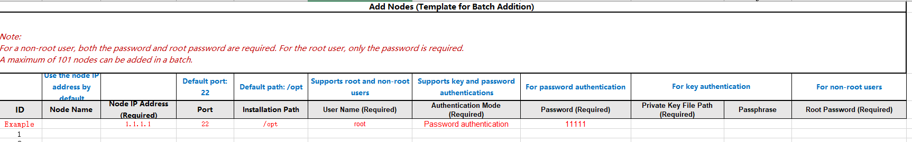
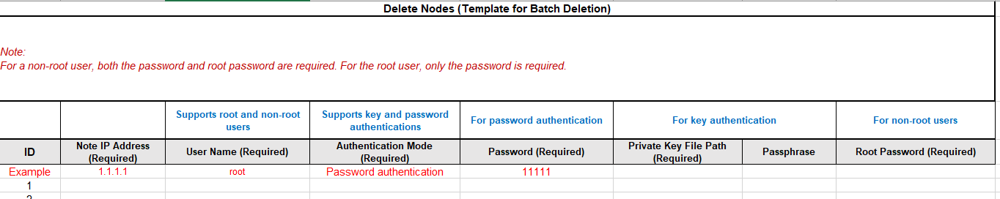

This section describes how to install nodes on the server to be analyzed. By default, a node is installed on the web server (server where the Kunpeng Hyper Tuner is installed). If the server to be analyzed is the web server, skip this section.
Prerequisites
- You have logged in to the System Profiler WebUI.
- The SELinux function has been disabled on the server to which a node is to be added. For details, see "Common Operations > Disabling SELinux".

- A maximum of 101 nodes, including the default node installed on the web server, can be added.
- A Docker container cannot be added as a node.
Agent nodes cannot be added to Docker containers created in port mapping mode, but can be added to Docker containers created in host mode.
- If a node fails to be added, view the log file named after the IP address in the /opt/hyper_tuner/sys_perf/logs/backend/agent_logs directory on the web server. If the following information is displayed, manually disable SELinux on the node:
"The SELinux enforcing mode is enabled on the server, which will cause a tool installation failure".
Procedure
- Click
 in the upper right corner and choose Node Management.
in the upper right corner and choose Node Management.The Node Management page is displayed.
- Click Add.
User root is used as an example, as shown in Figure 1. Table 1 describes the parameters.
Table 1 Parameters for adding a node Parameter
Description
(Optional) Node Name
Name of the node to be added. The default value is the IP address of the node server. The name must meet the following requirements:
- Contain only letters, digits, and special characters (including @#$%^&*()[]<>._-!~+ and spaces).
- Contain 1 to 32 characters.
(Optional) Installation Path
Absolute path where the node is installed. The default value is /opt.
NOTE:The entered path cannot be /home.
- If the entered path belongs to the root user group, common users must have the read (r) and execute (x) permissions on the paths of all levels.
- If the entered path belongs to the malluma user group, user malluma must have the read (r) and execute (x) permissions on the paths of all levels.
Node IP Address
IP address of the server where the node is to be installed.
Port
SSH port of the server where the node is to be installed. The default value is 22. The value range is 1 to 65535.
User Name
User name for logging in to the node server. The default value is root.
NOTE:To ensure SSH channel security, you are advised to log in as a non-root user.
Authentication Mode
Authentication mode. The values are as follows:
- Password authentication
- Key authenticationNOTE:
If you select Key authentication, configure SSH authentication information on the server where the Kunpeng Hyper Tuner is installed. For details, see Common Operations > Configuring SSH Authentication Information on a Node Server.
Password
Password of the user for logging in to the node server.
NOTE:- This parameter is displayed when Authentication Mode is set to Password authentication.
- If the node is installed by the root user, you need to enter the password of the root user. If the node is installed by a common user, you need to enter the passwords of both the common user and root user.
Private Key File
Absolute path of the SSH private key file, for example, /home/malluma/is_rsa, for logging in to the node server.
NOTE:This parameter is displayed when Authentication Mode is set to Key authentication.
(Optional) Passphrase
Password of the SSH private key file for logging in to the node server. If the SSH private key password is not configured, you do not need to set this parameter.
NOTE:This parameter is displayed when Authentication Mode is set to Key authentication.
- Set node parameters (see Table 1 for parameter description) and click OK.
The following functions are provided for the added node:
- Changing the node name
- Viewing installation logs: You can view the components that are not installed in the system and the handling suggestions. The log content can be copied and downloaded.
You can view installation logs only when multiple nodes are added.
- Deleting the node
- The default node installed on the web server cannot be deleted.
- An analysis task created after a node is deleted will not analyze this node. However, you can still view the historical analysis report of this node. (If the node is occupied by a project, modify the project before deleting the node.)
- For a node installed as user root, enter the passwords of user root when deleting the node. For a node installed as a common user, enter the passwords of both the common user and user root when deleting the node.
- Monitoring the capacity of the running directory and run log directory: The WebUI displays the alarm and recovery information about the drive space capacity of the node.
- The maximum space of the running directory is 2 GB, and the maximum space of the run log directory is 150 MB.
- When the remaining drive space is less than 10% of the maximum drive space, the space used by the tool reaches 90%, or the remaining drive space of the server is less than 5 GB, the background stops the tasks running on the node. If a task does not contain the node, or a task contains the node but the task is being analyzed, the task is not stopped. If a new task contains the node, the task fails to be created.
- When the remaining drive space is less than 20% of the maximum drive space or the space used by the tool reaches 80% of the maximum drive space, an alarm is generated.
- When the remaining drive space is greater than 25% of the maximum drive space and the space used by the tool is less than 75% of the maximum drive space, the WebUI shows that the alarm is cleared.
- Import nodes in a batch.
Click Batch Import, and then click the template table to download the template.
Figure 3 Template
Fill in the information of the nodes to be imported, and upload the template on the page as shown in Figure 2 to add the nodes.
Do not upload empty tables, error tables, or non-standard tables. Fill in the tables in strict accordance with the template before uploading them. If the uploaded file is incorrect, an error message will be displayed.
- Delete nodes in a batch.
Click Batch Delete, and then click the template table to download the template.
Figure 5 Template
Fill in the information of nodes to be deleted following instructions on the template, and upload the template on the page as shown in Figure 4 to delete the nodes.